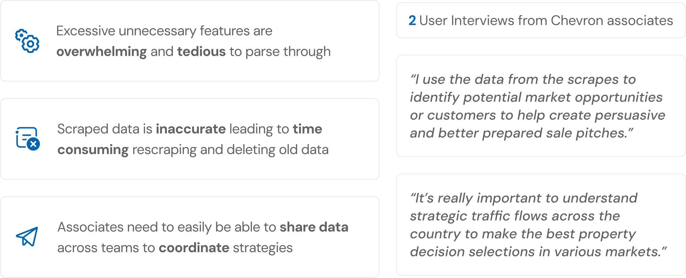
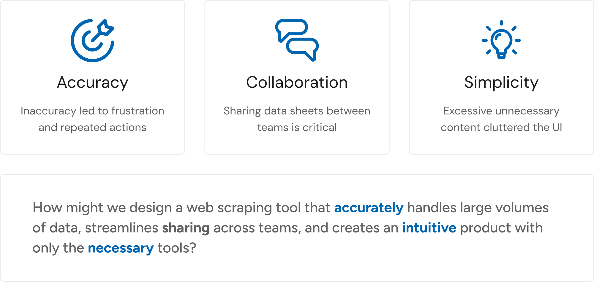
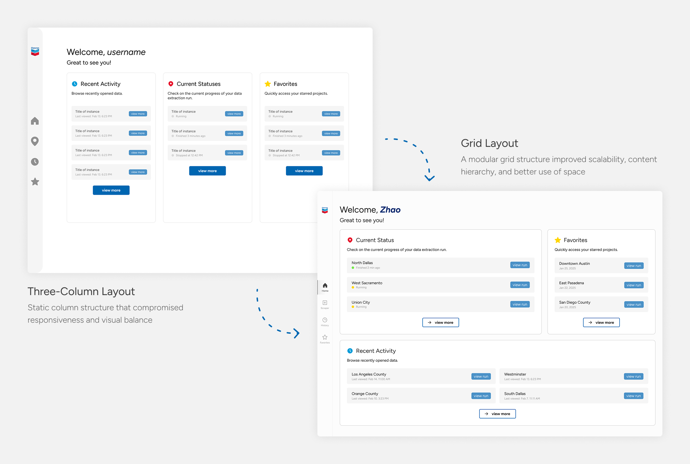
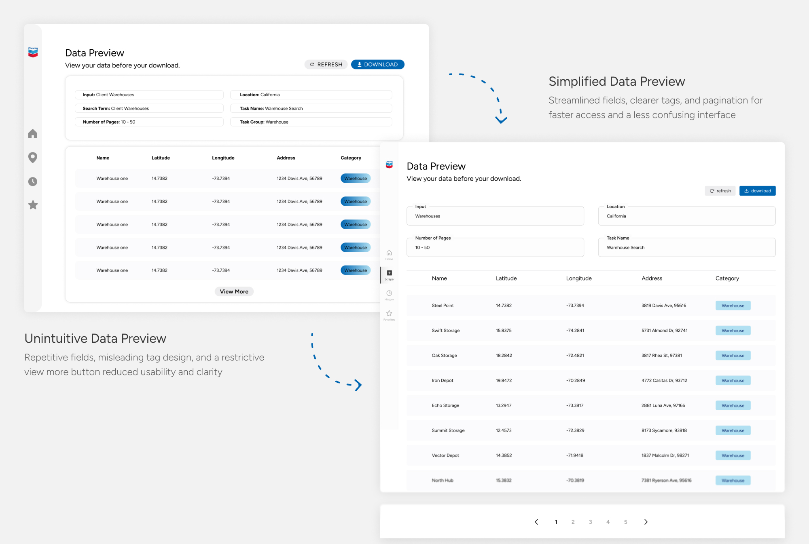
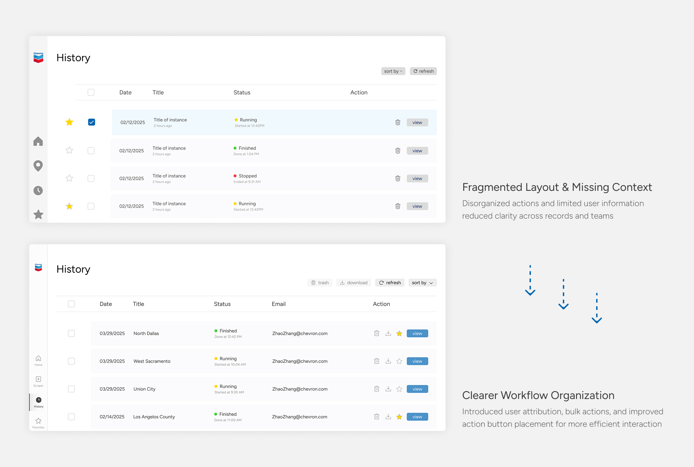
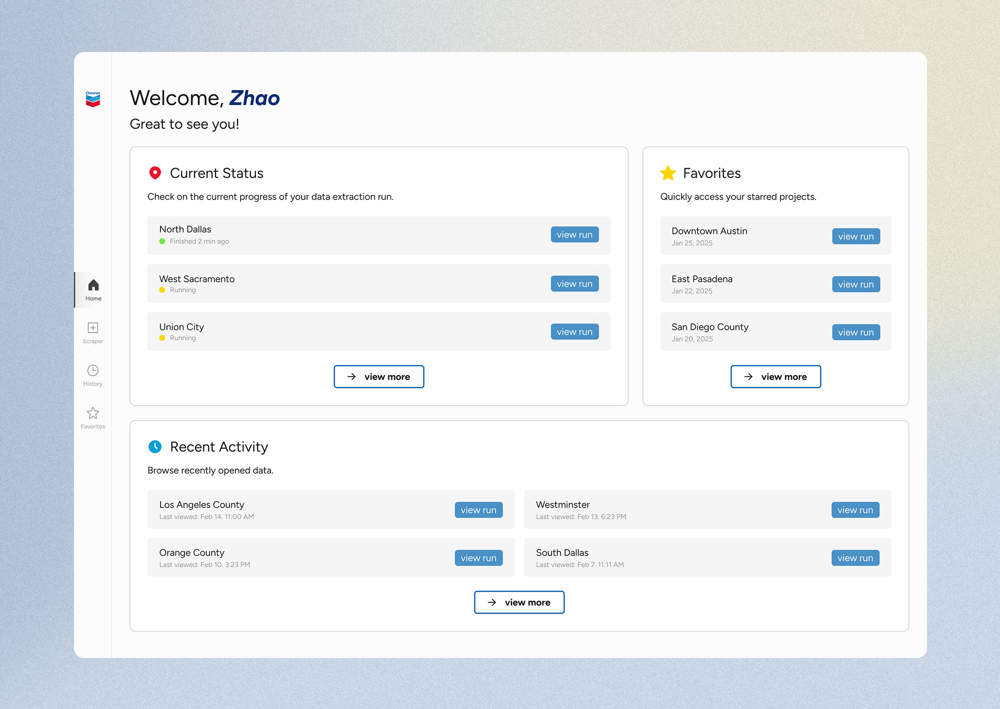
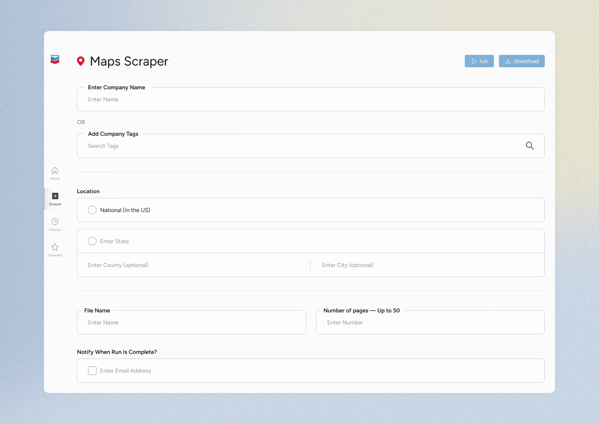
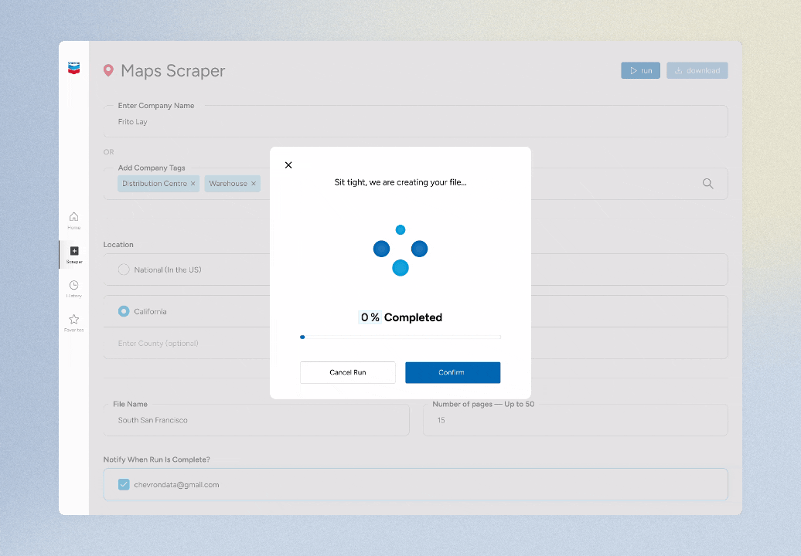
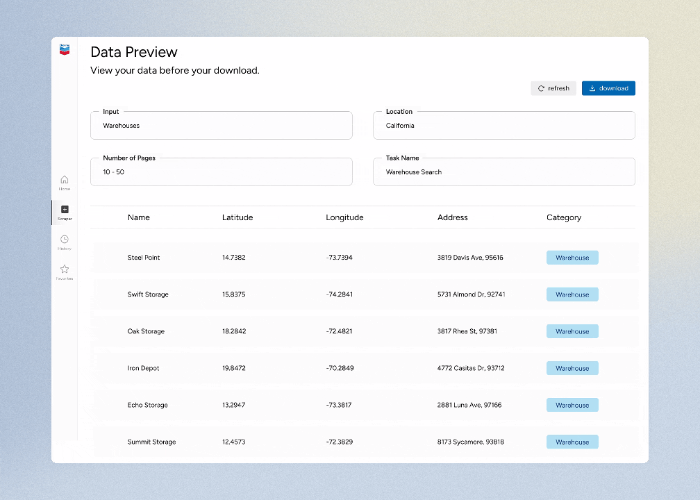
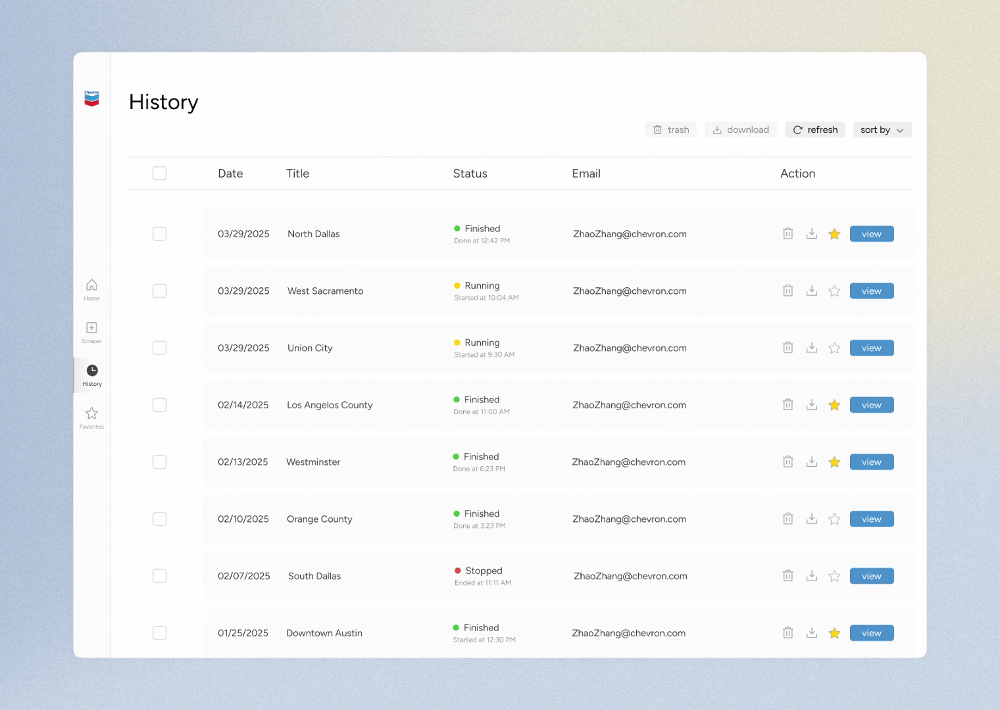

Overview
the problem
Chevron's existing web scraper produces inaccurate results and a frustrating user experience, forcing analysts to manually clean data and leading to slow, unreliable market research.
the client
Chevron is one of the world's leading integrated energy companies. Through its Renewable Natural Gas (RNG) division, Chevron identifies strategic locations to build RNG stations for large commercial fleets.
my impact
I designed the dashboard, history, and favorites pages for quick access to all parts of the product, and reduced form fields and clicks to simplify the scraping setup process. This achieved a 2x improvement in accuracy and a 97% reduction in search time, enabling faster decision-making for Chevron's RNG team.
research
Chevron’s current practice is inaccurate, restrictive, and slow
My team and I conducted two user interviews with a senior market analyst and a sales representative to understand their frustrations with the current scraper.
We found that excessive features made the tool overwhelming to navigate, inaccurate data led to time-consuming rescraping, and there was no straightforward way to share findings across teams. These pain points made it clear that associates needed a scraper that was accurate, focused, and built with collaboration in mind.

Competitors handle data well, but leave users without guidance
I examined three web scraping tools to identify what our users needed most. While most competitors offered a results page, deeper data features like detailed previews and a dedicated history page were inconsistent across the board.
Guidance features were even more sparse, with no competitor offering feedback or confirmation screens and only one supporting simplistic, intuitive tools. This pointed to an opportunity to build an experience that not only surfaces data effectively, but walks users through the process with clarity and confidence.
define
Accuracy, simplicity, and collaboration lead the design direction
To finalize all of our research methods, I determined the three key goals to help guide our design process. These were some of the most requested and discussed topics throughout our research, indicating our priorities.

ideation
Dashboard layout optimized for responsiveness and visual balance
The three-column layout was initially chosen for its clean visual structure, but client feedback revealed a critical gap: many Chevron associates work on smaller screens like tablets, where three columns would become too narrow to be functional.
Shifting to a grid layout directly addressed this, ensuring content stayed readable and accessible regardless of screen size.

Data preview refined for clearer interaction and faster navigation
Redundant fields, a button-like tag design, and a view more pattern made the data preview harder to parse and navigate.
Feedback from the client influenced these fixes: reducing fields to only what was necessary, correcting the tag styling, and introducing pagination so users could move through data more efficiently.

History page reorganized for workflow clarity and user attribution
Client feedback and internal critique both flagged the history page as a pain point. Without bulk action controls, the checkboxes on each record served no real purpose, and the lack of an email column made it difficult to know who had run each scrape.
These additions gave associates clearer context and more control over their records.

solution
A centralized dashboard with jobs at a glance
Use the dashboard to have instant access to current runs, recent activity, and previous runs to easily return to the work that matters most.

Search the web to start your run
Start at the search page to begin the web scraping process. Search by company details and location specifics to parse for the most relevant data, such as latitude, longitude, and address.

Visualize your run progress
Never worry about the status of your run progress. A visual indicator is used to keep users updated on what point their run is at.

Preview data before you export
View the full parsed data to verify your results before downloading. Users are able to reference the parameters of their scrape and easily jump through pages of data.

Access your history and favorite runs instantly
Bring all previous jobs into one place, making it easier for analysts to revisit, track, and manage past scrapes over time. Select multiple runs to access bulk actions.

reflection
01 Design beyond the primary audience
This product was initially built with one audience in mind: Chevron’s analysts. However, I quickly learned how the teams at Chevron work in separate departments, but are unified by using the same digital platforms and sharing the goal of efficiently using data to guide their business moves. Talking with other teams allowed me to better understand the downstream business impact and how one critical flaw can massively influence team productivity.
02 Feasibility is important
Discussing with our devs revealed holes within our design ideas due to feasibility issues. So although our minds were running wild, we had to find a middle ground - we need to respect the time of our developers but also understand the abilities and circumstances of the client. This helped me pin point exactly what was to be implemented, and what ideas to archive.